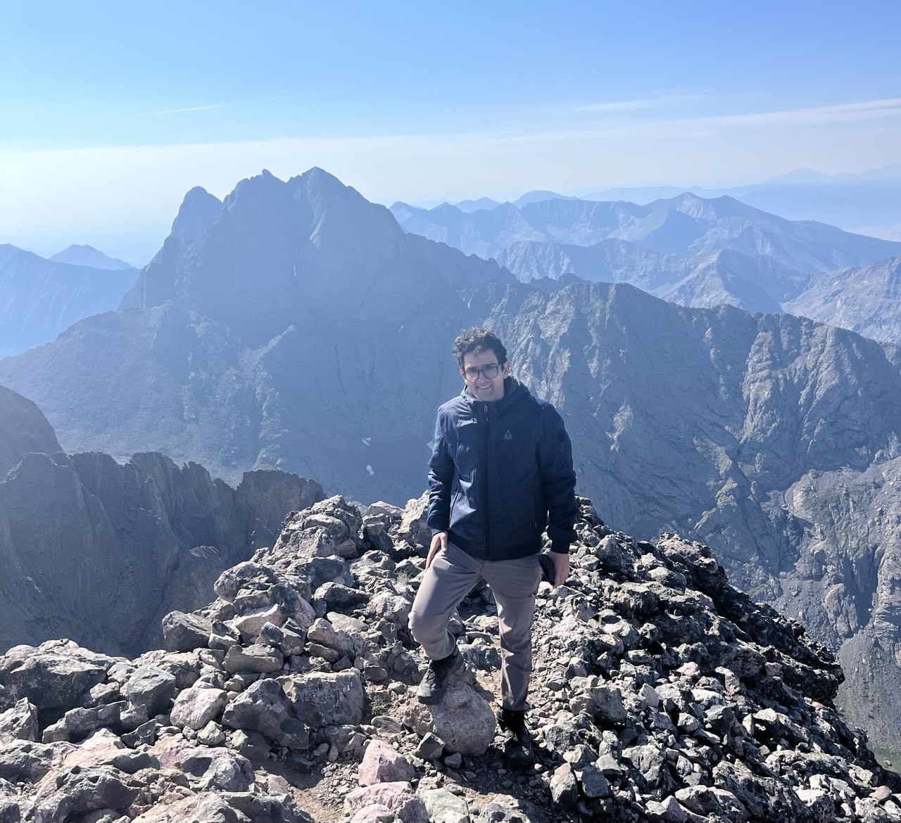

Parsa Ghadermazi
Bioinformatics Scientist
My name is Parsa Ghadermazi, and I am a Postdoctoral Associate at the University of Colorado Boulder in the Olm Lab. My research focuses on developing efficient bioinformatics tools and computational pipelines to answer biological questions. Outside of research, I enjoy trail running and fly fishing!
